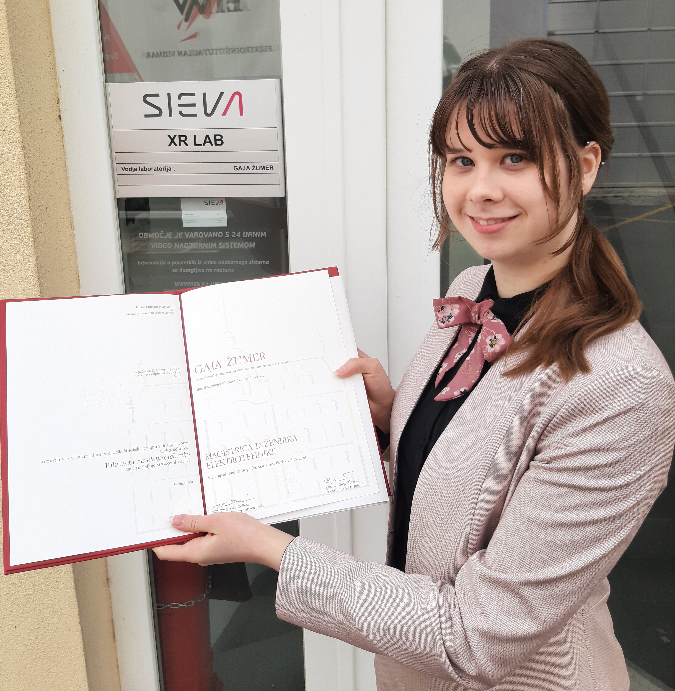

“Don’t wish it were easier, wish you were better.
Don’t wish for fewer problems, wish for more skills.
Don’t wish for less challenge, wish for more wisdom.”
Jim Rohn
Po opravljeni prvi stopnji Univerzitetnega študijskega programa Matematika na Fakulteti za matematiko in fiziko v Ljubljani sem se preselila na Fakulteto za elektrotehniko
in tam magistrirala iz Robotike. Tekom študija sem pol leta delala v Revozu na oddelku za robotiko, sodelovala na tradicionalnih Dnevih industrijske robotike in se začela zanimati
za tehnologije razširjene resničnosti (XR, ang. extended reality).
Takoj po študiju sem se zaposlila v Razvojnem centru SiEVA kot vodja Laboratorija za digitalne tehnologije. Cilj laboratorija je povezovati podjetja iz avtomobilske industrije s
fakultetami ter dobavitelji strojne in programske opreme in popularizirati uporabo XR tehnologij v proizvodnih in delovnih procesih.
rada delam z mladimi in delim svoje znanje, zato bom letos že drugo leto zapored sodelovala na Poletnem taboru inovativnih tehnologij, ki ga organizira Fakulteta za elektrotehniko.
Udeleženci bodo na petdnevni delavnici testirali več vrst pametnih očal in razvijali lastne XR aplikacije z uporabo igralnega pogona Unity. Izbirali bodo lahko med več projekti; nekateri izmed njih
sodijo tudi na področje robotike in umetne inteligence.
